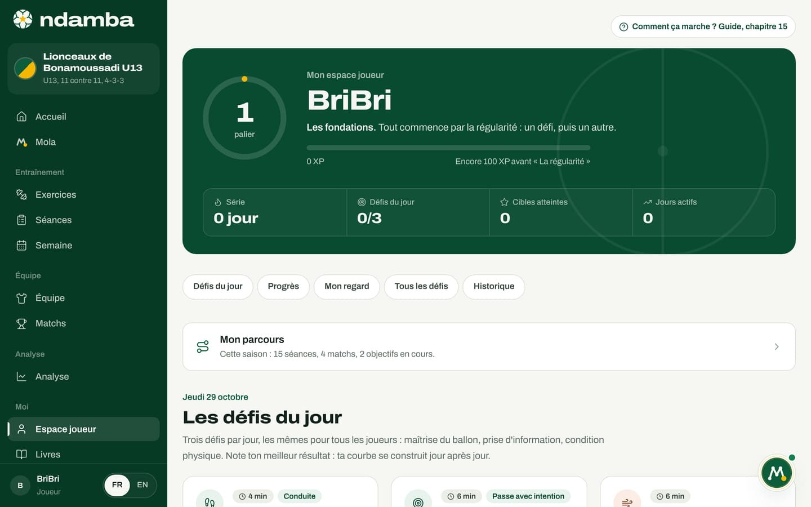
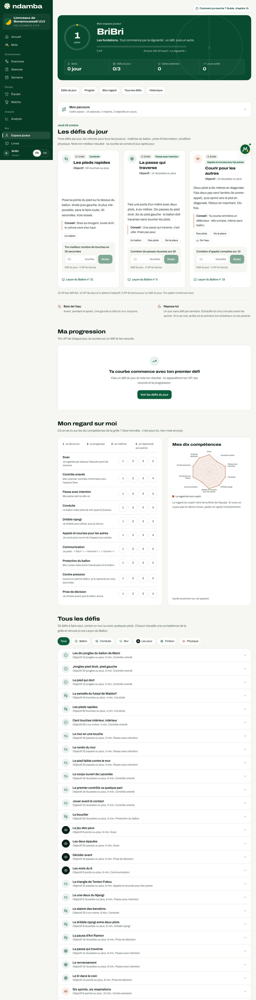
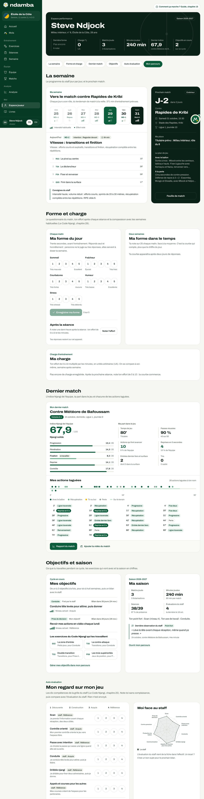
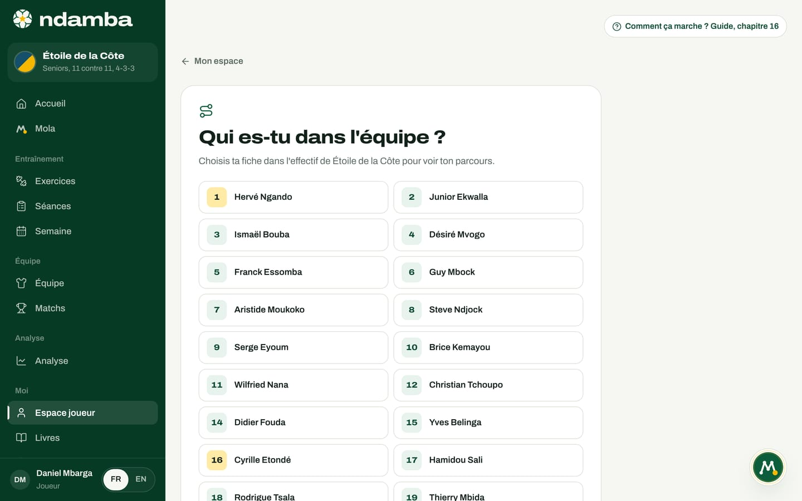

L’espace joueur
Les défis du jour, les paliers et la série pour les jeunes ; la semaine, la forme, la charge et le dernier match pour les joueurs de 16 ans et plus. Et comment relier son profil à sa fiche de l’effectif.
11 min de lecture
Beaucoup de joueurs africains progressent seuls : dans une cour, contre le mur d’une maison, avec un ballon et deux bouteilles en guise de plots. Ce temps compte autant que l’entraînement du club, mais personne ne le voit ni ne le guide. L’espace joueur lui donne une forme : un défi précis, un objectif chiffré, un résultat noté, une courbe qui monte. Et il grandit avec le joueur : un enfant de dix ans y trouve des défis et des paliers, un milieu de vingt-huit ans sa semaine de match, sa forme du matin et sa charge. Les deux parlent la langue du Code Njangi.
Deux espaces, selon l’âge
L’espace joueur s’ouvre par Moi, puis Espace joueur, dans le menu. La page d’Accueil d’un profil joueur change aussi de visage. Ndamba choisit la version selon l’âge du joueur, qu’il lit dans cet ordre : l’année de naissance de sa fiche dans l’effectif, puis la catégorie de son profil (U13, U17, Seniors, Pro), puis la catégorie de son équipe.
| Âge du joueur | Accueil et espace joueur | Carnet |
|---|---|---|
| Moins de 16 ans | L’espace jeune : défis du jour, XP, paliers, série, Leçons du Ballon | Mon carnet du Njangi |
| 16 ans et plus (U17, U19, U21, seniors, pros) | L’espace performance : semaine, forme, charge, dernier match, objectifs | Mon journal de joueur |
Un parent garde toujours l’espace jeune de son enfant (chapitre 17). Un entraîneur qui ouvre l’espace joueur voit la version qui correspond à l’âge de son équipe, en aperçu.
L’accueil du jeune joueur

L’accueil d’un jeune joueur se lit de haut en bas, comme une journée.
- En haut, le salut avec son prénom, la date, et une phrase qui tourne : La devise, la Leçon du Ballon du jour, puis Notre mantra. La flèche à droite de la phrase passe à la suivante. À côté, trois chiffres : XP, Série et Défis (combien des trois défis du jour sont faits).
- La carte Mon parcours résume la saison en une ligne, par exemple « Cette saison : 15 séances, 4 matchs, 2 objectifs en cours. » Elle ouvre le parcours (chapitre 16).
- Le défi du jour montre le premier défi, ouvert, prêt à être noté, et les deux autres en dessous. Le lien Les trois défis du jour mène à l’espace joueur.
- La carte Ma progression donne le palier, ce qu’il manque pour le suivant, la série, les Cibles atteintes, les Leçons comprises sur 40, et Mes 7 derniers jours (un rond coché par jour avec un défi). Le bouton Mon espace joueur ouvre l’espace complet.
- La leçon du jour affiche une page du carnet de BriBri avec son schéma, qui se joue en animation (chapitre 16).
- À droite : Le roman, le Prochain match avec un petit rituel (« Le match est dans 2 jours : prépare ton sac et couche-toi tôt la veille. »), et Mon carnet du Njangi avec la dernière page écrite.
Sans équipe, une carte Tu joues dans une équipe ? propose Ajouter mon équipe. Les défis marchent aussi sans équipe.
Les défis du jour


L’espace jeune commence par le palier, dans un anneau, avec son nom (Les fondations pour commencer) et la barre d’XP. Dessous, quatre chiffres : Série, Défis du jour, Cibles atteintes et Jours actifs. Une rangée de raccourcis mène aux sections de la page : Défis du jour, Progrès, Mon regard, Tous les défis, Historique.
Chaque jour, Les défis du jour proposent trois défis, les mêmes pour tous les joueurs à la même date : un défi de maîtrise du ballon ou de conduite, un défi contre le mur, de prise d’information ou de finition, et un défi physique. Ils sont tirés d’une bibliothèque de 32 défis à faire seul, contre un mur ou avec quelques plots. Chacun travaille une des dix compétences de la grille du Code Njangi et renvoie à une Leçon du Ballon : Les dix jongles du ballon de Mami reprend le rituel des deux frères avant un grand match.
Pour faire un défi et le noter :
- Lisez la carte : la durée (par exemple 4 min), la compétence travaillée, et l’Objectif (« 60 touches ou plus »).
- Touchez Comment faire et noter si la carte est fermée. Vous voyez les consignes, le Conseil, et le matériel : Un ballon, Un mur, Des plots, Un partenaire ou De la place. Les défis physiques ajoutent toujours De l’eau.
- Faites le défi, puis écrivez votre meilleur résultat dans le champ, sous la question du défi (« Ton meilleur nombre de touches en 30 secondes »).
- Touchez Noter. Le gain d’XP s’affiche (par exemple +25 XP), et la carte indique « Aujourd’hui : 60 touches, objectif atteint ».
L’XP se calcule tout seul, à partir des résultats notés : 10 XP pour un défi fait, 10 XP de plus si l’objectif est atteint, 5 XP de bonus si c’est un défi du jour. Un même défi rapporte une fois par jour : si vous le refaites, c’est le meilleur résultat qui compte, et un deuxième essai n’ajoute que les 10 XP de l’objectif s’il est enfin atteint. Le palier monte tout seul.
| Palier | Nom | À partir de |
|---|---|---|
| 1 | Les fondations | 0 XP |
| 2 | La régularité | 100 XP |
| 3 | Le cœur | 250 XP |
| 4 | La raison | 450 XP |
| 5 | Les yeux | 700 XP |
| 6 | La carte | 1 000 XP |
| 7 | Le souffle | 1 400 XP |
| 8 | Le Njangi complet | 2 000 XP |
Les noms suivent le voyage du roman : la régularité d’abord, puis les cinq pièces du Njangi. Quand un palier est franchi, un bandeau Palier 3 atteint s’affiche quelques secondes. La Série compte les jours de suite avec au moins un défi ; elle tient jusqu’à la fin de la journée suivante, puis repart à zéro.
Progrès, records et historique
La section Ma progression apparaît dès le premier résultat noté. Elle contient trois blocs :
- XP des 14 derniers jours : une barre par jour, aujourd’hui en terre rouge.
- Ma courbe : choisissez un défi, et vous voyez vos meilleurs résultats face à la ligne de l’objectif, avec le Record (pour un slalom chronométré, plus c’est bas, mieux c’est).
- Mes records : les défis les plus pratiqués, avec le meilleur résultat et une étoile quand l’objectif est atteint.
Mon historique liste les derniers résultats. Une erreur de frappe se corrige avec la corbeille, et Annuler reste proposé quelques secondes. La page le rappelle : « Tout reste sur cet appareil : rien n’est envoyé sur internet. »
Mon regard : se juger soi-même
La section Mon regard sur moi demande au joueur où il en est sur les dix compétences de la grille : le scan, le contrôle orienté, la passe avec intention, la conduite, le dribble njangi, les appels et courses pour les autres, la communication, la protection du ballon, la contre-pression et la prise de décision. Chaque ligne a une phrase simple (« Je regarde par-dessus l’épaule avant de recevoir. ») et quatre boutons : 1 « Je découvre », 2 « Je progresse », 3 « Je maîtrise », 4 « Je l’apprends aux autres ».
Le radar Mes dix compétences se dessine à mesure. Si l’entraîneur a évalué le joueur dans l’effectif, et que le profil est relié à sa fiche (par le même nom ou par Mon parcours), une deuxième forme apparaît, Le regard de mon coach, avec ce conseil : « Si vous ne voyez pas la même chose, parlez-en après l’entraînement. » Ce regard sur soi ne sort pas de l’appareil (« Gardé seulement sur cet appareil. ») ; il fait partie de la sauvegarde exportée depuis Réglages, et Tout effacer le supprime.
Plus bas, Tous les défis présente les 32 défis en liste, avec des filtres : Tous, Ballon, Conduite, Mur, Les yeux, Finition, Physique. Chaque ligne s’ouvre sur place, avec le même formulaire pour noter. En bas de page, deux portes : Les Leçons du Ballon et Mon carnet du Njangi (chapitre 16).


L’espace performance, à partir de 16 ans
À partir de 16 ans, le joueur s’entraîne sur la semaine du match. Son espace suit le chapitre 29 du Code Njangi : un questionnaire de forme chaque matin, l’effort ressenti après chaque séance, et la comparaison avec ses propres semaines, jamais avec un coéquipier.

L’accueil d’un joueur de 16 ans et plus ouvre sur une bande sombre : le salut, le rôle du jour dans la semaine (« Aujourd’hui, MD-2, vitesse » et le titre de la séance), son poste, son numéro et son club, et trois chiffres : Forme (sur 25, ou À noter), Charge 7 j en UA, et Match (J-2, avec l’Indice du dernier match). Suivent la semaine, le prochain match, la forme, la charge, le dernier match, les objectifs et la saison. L’espace performance (Espace joueur) reprend ces cartes en détail. Son en-tête Espace performance affiche six chiffres (forme, charge, matchs joués, minutes jouées, dernier Indice, objectifs en cours) et des raccourcis : La semaine, Forme et charge, Dernier match, Objectifs, Auto-évaluation et Mon parcours.
La semaine. La carte Ma semaine montre sept jours : ceux qui mènent au prochain match quand il tombe dans les six jours, sinon du lundi au dimanche. Chaque jour porte son rôle (MD+1, MD-4, Repos, Match), des barres d’Intensité habituelle et un point quand l’effort a été noté. Touchez un jour : vous voyez la séance du staff, ses blocs minute par minute avec le code de chaque exercice, pourquoi ce jour existe dans la semaine, et les Consignes du staff. La carte Prochain match donne le compte à rebours, le lieu, Ma place dans la composition prévue (« Titulaire prévu : Milieu intérieur, rôle du 8 »), Le plan de jeu (Avec le ballon, À la perte) et le bouton Feuille de match.
Forme et charge. Chaque matin, avant l’entraînement :
- Dans Ma forme du jour, notez de 1 à 5 le Sommeil, la Fraîcheur, les Courbatures, l’Humeur et le Stress.
- Touchez Enregistrer ma forme. La note sur 25 s’affiche avec son niveau : Frais (20 et plus), Correct (15 à 19) ou Entamé. Après cinq jours de réponses, la carte la compare à votre moyenne des 28 derniers jours.
- Environ trente minutes après la séance, sous Après la séance, répondez à « À quel point la séance a-t-elle été difficile ? » de 0 à 10, vérifiez la Durée (minutes), puis Enregistrer l’effort. Une séance seule ou un footing se note avec Noter une séance individuelle.
L’effort multiplié par les minutes donne la charge de la séance, en unités arbitraires (UA). La carte Ma charge additionne les 7 derniers jours et les compare à la Moyenne des 3 semaines d’avant : plus de 30 % au-dessus, c’est un Pic de charge, avec le conseil d’en parler au staff ; plus de 30 % en dessous, une Semaine allégée ; entre les deux, une Charge régulière. Si les trois dernières notes de forme sont nettement sous la moyenne, une alerte s’affiche : « Ta forme baisse depuis trois jours ». Les réponses restent sur l’appareil.
Dernier match. La carte Mon dernier match donne l’Indice Njangi de l’équipe et ses cinq sous-indices, puis Ma part dans le jeu : temps de jeu, passes réussies, Actions qui font avancer et Reprises en 5 secondes, avec leur part dans le total de l’équipe. Dans l’espace performance, chaque action taguée à votre nom se place sur une ligne du match, minute par minute. Les boutons mènent au Rapport du match et à la vidéo.
Objectifs et saison. Mes objectifs liste les objectifs du cycle (un à trois, pour six à huit semaines), qui les a fixés (Fixé par le staff ou Mon objectif), le temps avant le bilan et, dans l’espace performance, Les exercices du Code Njangi qui les travaillent. Ma saison donne matchs, minutes, présences et la Dernière observation du staff. Enfin, Mon regard sur mon jeu reprend l’auto-évaluation sur la grille du staff (Découverte, Construction, Acquis, Référence), à côté de ce que le staff a noté.


Qui es-tu dans l’équipe ? Relier son profil à sa fiche
Les minutes, les objectifs, les observations du staff et le dernier match viennent de la fiche du joueur dans l’effectif. Ndamba doit donc savoir quelle fiche est la vôtre. Si votre profil porte le même nom que votre fiche, le lien se fait tout seul. Sinon, l’espace performance affiche « Ta fiche n’est pas encore reliée. » avec le bouton Relier mon profil ; chez les plus jeunes, c’est la carte Mon parcours qui mène au même écran.
- Touchez Relier mon profil, ou la carte Mon parcours.
- L’écran Qui es-tu dans l’équipe ? affiche l’effectif de votre équipe, chaque joueur avec son numéro.
- Touchez votre nom. Le parcours s’ouvre, et l’accueil, l’espace joueur et les objectifs se remplissent avec vos données.


Un parent voit le même écran sous le titre Quelle est la fiche de votre enfant ? (chapitre 17). Un membre du staff qui ouvre l’espace performance voit Aperçu pour le staff. et Choisir un joueur, pour le voir comme un de ses joueurs.